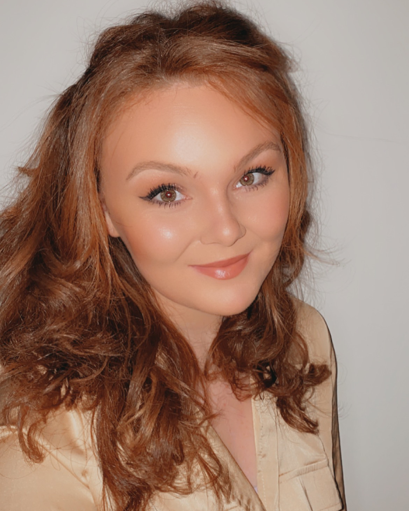

Get to Know Me
Alexandra Radovic is a journalist in the Capital News Service Annapolis bureau. She has worked as the
Editor-In-Chief for Campus Current, an intern at College Park Here & Now and a reporter for The Washington
Blade, County Sports Zone and Marymount Lacrosse. She also hosted a Q&A covered by The Capital Gazette and runs
her own reporting-based Youtube channel.
Alexandra Radovic

Get to Know Me
Alexandra Radovic is a journalist in the Capital News Service Annapolis bureau. She has worked as the
Editor-In-Chief for Campus Current, an intern at College Park Here & Now and a reporter for The Washington
Blade, County Sports Zone and Marymount Lacrosse. She also hosted a Q&A covered by The Capital Gazette and runs
her own reporting-based Youtube channel.
Social Medias and Clips
Contact me
Experience
Journalist, Capital News Service: August 2021-Present
- Covering juvenile justice, educationa and the board of public works for the wire service. Published in News
Break, Southern Maryland News, and The Frederick News Post
Reperting Intern, College Park Here & Now: May 2020- present
- College Park Here & Now put out its first issue in May 2020. The nonprofit community paper is owned by
Hyattsville Newspaper Inc., which is in the
process of changing its name to Streetcar Suburbs Publishing. Streetcar owns the CPHN and its sister paper,
the Hyattsville Life & Times. CPHN delivers
to each residential address in College Park, with a circulation of 9,600.
Sports Reporter, County Sports Zone: April 2020-June 2020
- Published 5 athlete profiles. County Sports Zone reports every score from every game of each high school
sport in every jurisdiction of Maryland.
Sports Reporter, Marymount Athletics: Dec 2020
- Covered senior tribute to graduating players of men’s lacrosse. This is the homepage that covers all sports
games and events at Marymount University.
Reporter, The Washington Blade: Dec 2020- March 2020
- Covered local LGBT issues and features. The Washington Blade is The oldest LGBT newspaper in the U.S.
covering the latest gay, lesbian, bisexual and
transgender news in Washington, DC and around the world..
Editor-In-Chief, The Campus Current: August 2018-May 2019
- Served as editor, publishing a monthly 24-page issue. Campus Current is the independent student
newspaper of Anne Arundel Community College.
Featured, The Capital Gazette: September 30 2019
- Featured on the cover of The Capital Gazette for a Q&A with Chris Wilson, an ex-prisoner who wrote a
book and is set to produce a film about his life.
The Capital is a daily newspaper published in Annapolis, Maryland, to serve the city of Annapolis,
much of Anne Arundel County, and neighboring Kent
Island in Queen Anne's County.
Education
University Of Maryland, College Park, Maryland: B.A. Dec 2021
- Philip Merrill College of Journalism. B.A. in multimedia journalism with a concentration in
Public Policy
Anne Arundel Community College: August 2016-May 2019
- AA earned in Transfer Studies and Elementary Education